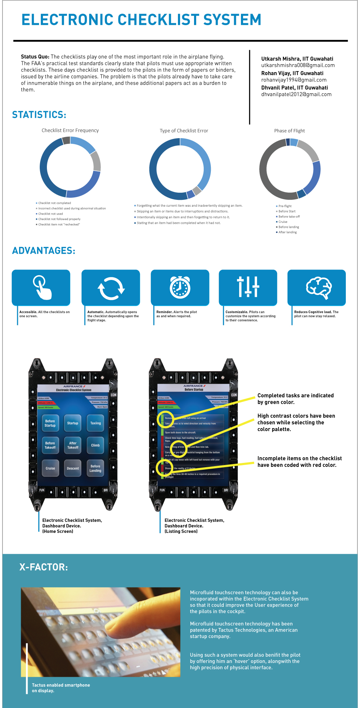

Honeywell Aero Design Challenge
User Research, Analysis and Conceptualisation
- Portfolio
- Docspad Video
Overview: The checklists play one of the most important role in the airplane flying. However, they are never taken
with that seriousness. All pilots have been taught the importance of using written checklists, but a few
ignore this flight safety resource. The FAA's practical test standards clearly state that pilots must use
appropriate written checklists, yet the accident record shows that some pilots don't. Such actions can yield
dire results.
Our Solution: Hence, our team decided to work on this important aspect of the airplane flying, and thus propose the
solution of “Electronic Checklist System”.
This would be a single electronic screen, an integral part of the cockpit, which would have all the
checklists mentioned categorically. Categories like:
Before Startup,
Startup,
Taxiing,
Before takeoff,
After takeoff,
Climb,
Cruise,
Descent,
Before landing,
Landing,
After landing,
Before shutdown,
After shutdown,
Emergency Checklist – for every single type of emergencies
Advantages: Now, this checklist works automatically and sends a reminder, if that particular task is not done. For clear
understanding, let’s take a scenario into the consideration. If the plane is getting ready for ‘Startup’, then
the screen would automatically show the checklist of ‘Startup’. Now the pilot, could easily refer to the
screen in front of him and perform tasks easily. As he’ll perform the tasks, those tasks would automatically
get struck off. For example: if the checklist shows ‘Order maintenance worker to open the duct tape from
static ports’. So, that item would strike off, once the worker opens the tape covering. And if it’s not done,
then the pilot would be given a reminder, before takeoff.
In this way, we are reducing the paperwork of pilots and integrating one of the most important aspect of
airplane flying (i.e. checklist) into the cockpit itself.
Moreover, our checklists could be customized. So, if a pilot needs an additional item, then he could add
that to the checklist and manipulate according to his work-plan.
